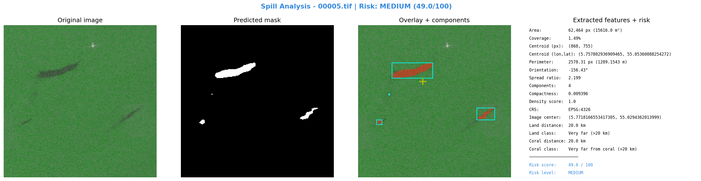

مركز الصورة: lon=5.7718166553417305, lat=55.0294362013999
مركز التسرب: lon=5.757802936909465, lat=55.05360088254272
التاريخ: 2023-01-13 21:04:09
التحليل البصري

التقرير
**تقرير تحليل تسرب نفطي باستخدام صور الأقمار الاصطناعية SAR**
١. الملخص التنفيذي
تم تحليل صورة الأقمر الصناعي SAR لتحديد موقع ووصف التسرب النفطي في منطقة محددة. النتائج تشير إلى وجود تسرب نفطي معتدل، مع متوسط شدة 1.0 وعدد بقع منفصلة 4.
٢. الموقع الجغرافي والتاريخ
* نظام الإحداثيات: EPSG:4326
* مركز الصورة: (5.7718166553417305, 55.0294362013999)
* مركز التسرب: (5.757802936909465, 55.05360088254272)
* التاريخ: 2023-01-13 21:04:09
٣. الوصف الهندسي للتسرب
* المساحة: 62,464 بكسل (15616.0 م²)
* نسبة التغطية: 1.49%
* المحيط: 2578.31 بكسل (1289.1543 م)
* مركز البقعة (بكسل): (868, 755)
٤. القرب من اليابسة والشعب المرجانية والأثر البيئي
* المسافة من اليابسة: 20.0 كم
* التصنيف: Very far (>20 km)
* المسافة من الشعب المرجانية: 20.0 كم
* التصنيف: Very far from coral (>20 km)
٥. تقييم الخطورة
* Risk Score: 49.0 / 100
* Risk Level: MEDIUM
* العوامل:
+ coverage 1.49% → MINIMAL (<2%) | spread_ratio 2.199 → MEDIUM (2-5) | components 4 → HIGH | density 1.0 → CRITICAL | land 20.0 km → LOW | coral 20.0 km → LOW
٦. التوصيات
* توصية 1: إجراء دراسة تفصيلية لتحديد مصدر التسرب ومداه.
* توصية 2: تطبيق تدابير وقائية للحد من تأثير التسرب على البيئة.
* توصية 3: مراقبة مستمرة للتسرب باستخدام صور الأقمار الصناعية SAR.
٧. الملاحظات
* يُعتبر هذا التقرير جزءًا من عملية تحليل وتصميم تدابير وقائية للحد من تأثير التسرب على البيئة.
* يحتاج إلى إجراء دراسات أخرى لتحديد مصدر التسرب ومداه.
**توصيات عملية:**
1. إجراء دراسة تفصيلية لتحديد مصدر التسرب ومداه.
2. تطبيق تدابير وقائية للحد من تأثير التسرب على البيئة.
3. مراقبة مستمرة للتسرب باستخدام صور الأقمار الصناعية SAR.